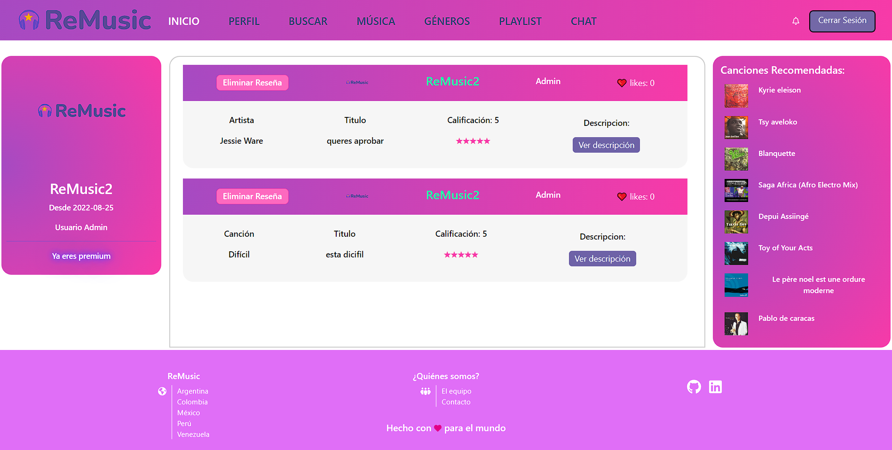
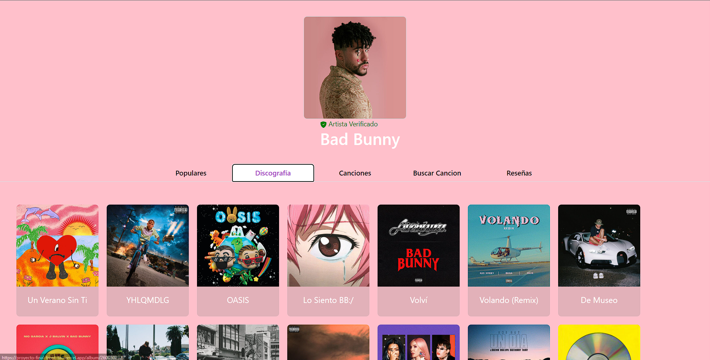

ReMusic - Henry's Bootcamp Final Project
ReMusic is an application that works as a social network. The main feature of our site is to be able to create reviews of your favorite songs, artists or albums and share them with friends and followers.
Our main focus while developing the app was tho make the user stay within ReMusic and always have something to do. The user could browse through a Genre Library to seek songs related to said genre, discover new and random music in the Music Tab or search his favourite song with our dynamic search bar.
The most challenging part of this project was researching, studying and implementing new technologies to improve the user experience. A great example of this was the live chat system, where Premium users can chat with other users of similar rank.
ReMusic is dedicated to filling the gap between streaming services, content review sites and social networking platforms.